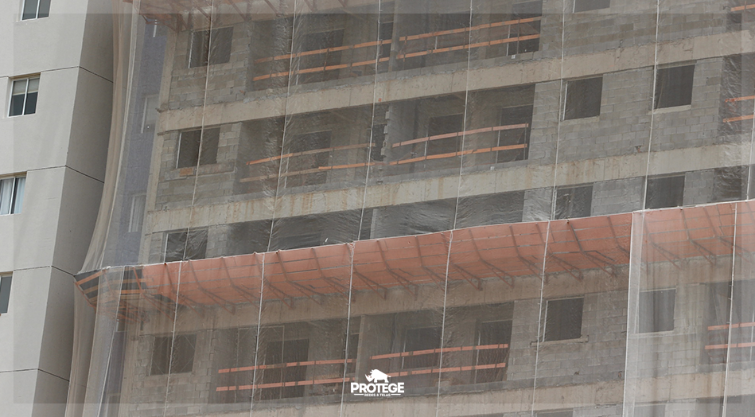

As telas fachadeiras ou telas para construção civil como são comumente conhecidas são geralmente utilizadas em prédios que estão em construção ou reforma. Mas de uma forma geral esse tipo de tela serve para qualquer obra e sua instalação evita uma série de problemas tais como, impedir que detritos ou ferramentas caiam das obras podendo vir a atingir alguma pessoa, ser uma proteção para os funcionários que trabalham na obra e até mesmo diminuir a consideravelmente a quantidade de poeira que a obra expele para as outras construções a sua volta.
Assim como todas as redes e telas que a Protege trabalha a tela fachadeira também é feita de polietileno virgem. Isso garante maior resistência as intempéries climáticas pois o polietileno possui tratamentos especiais, o que é muito importante para um tela fachadeira já que a grande maioria são instaladas em locais abertos.